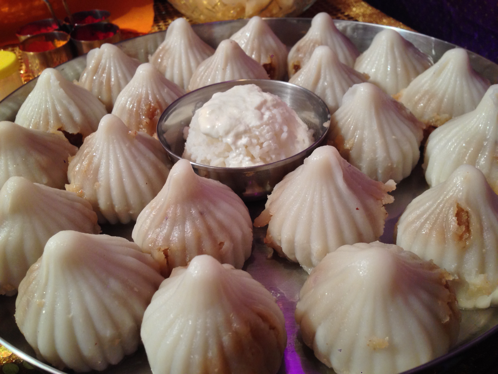

Ukadiche Modak

Description
A traditional Maharashtrian sweet delicacy prepared especially during Ganesh Chaturthi. These steamed dumplings have a soft outer covering made from rice flour dough, filled with a fragrant mixture of grated coconut, melted jaggery, and cardamom. When steamed, the modaks turn glossy and soft, offering a melt-in-the-mouth experience with a sweet, nutty, and aromatic flavor.
Ingredients
- 1 cup rice flour
- 1 cup grated coconut
- 3/4 cup jaggery (grated)
- 1 tbsp ghee
- 1 tsp cardamom powder
- 1 cup water
- A pinch of salt
Instructions
- Heat ghee in a pan, add coconut and jaggery. Cook until jaggery melts.
- Add cardamom powder, mix, and let it cool.
- Boil water with a pinch of salt and 1 tsp ghee.
- Add rice flour slowly, stir, and cover. Let it rest for a few minutes.
- Knead the rice dough until smooth.
- Take small portions, flatten, and shape into cups.
- Fill with coconut-jaggery mixture, close into modak shape.
- Steam modaks for 10–12 minutes until shiny and soft.